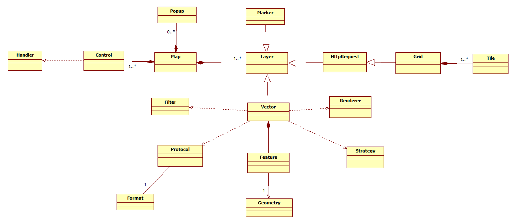

OpenLayers对象模型图
更新日期:
前言
OpenLayers作为一款优秀的开源的webGIS API，在国外的应用十分广泛，在国内也有一定的应用，比如超图和天地图的WebGIS的javascript API的就是基于OpenLayers稍作修改而成的。虽然在其官网和github上都有比较详尽的API说明文档和使用样例，但对于刚接触openlayers的同学来说，面对其庞大的接口(类)，想在短时间内理清各接口之间的关系是十分困难的。我在初次接触openlayer时，曾在网上google和baidu了很长时间，最终还是没发现有十分直观的介绍openlayers的接口关系的文章。因此，我想到当初在学习ArcObject开发的时候，经常翻阅的ArcObject对象模型图。它将繁杂的ArcObject各接口的关系使用UML类图的形式简介明了的展现出来，对开发者的帮助真是十分的明显。所以我就了自己动手制作一份OpenLayers的对象模型图的想法，一来可以提高我的UML水平，二来可以帮我审查和巩固自己对openlayers的理解。
OpenLayers对象模型图
对象模型图是基于UML的类图制作的，关于UML的类图的一些概念有兴趣的同学可以网上搜搜看。
直接上图

说明：
Map：最核心的对象，所有的其他对象都是为构建Map服务的。
Layer：Map中的图层，用于分层展示地理数据。
Grid：网格图层，继承自HttpRequest，即这类图层都是通过http请求获得的。
Tile：瓦片，是构成Gird图层的单元，可以理解为一幅小图片。
Marker：地图上的标记点，主要表现为一个有位置的图标。
Vector：矢量图层，也可以看做地图覆盖层(overlay)，可以用存放自己定义的数据。
Stratey：策略，用于根据指定策略显示Vector中的数据。
Filter：过滤器，根据一定的条件过滤出Vector中需要显示的数据。
Render：渲染器，用于对Vector实现的数据根据指定的样式渲染。
Protocol：协议，用于根据指定格式的协议从服务端或本地文件读取数据后在Vector中展示。
Format：数据文件的格式。
Control：Map上的控件，用于和地图交互。
Handler：事件处理句柄，封装了浏览器事件。
Feature：要素，它是Vector图层的内容，由几何图形和属性信息组成。
Geometry：几何图形，是要素的图形表现。
Popup：地图上的气泡弹出框。
上面的对象模型图只是OpenLayers最基本的类图，OpenLayers中的许多具体的类都是基于这些基本类扩展而来。